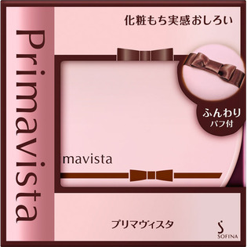

返回列表
产品名称：プリマヴィスタ 化粧もち実感おしろい

花王 プリマヴィスタ 化粧もち実感おしろい １２．５Ｇ
メーカー 花王
JANコード 4901301354693
商品の特徴
●肌あたりふんわりパフ付です
- 成分・分量
- 【成分】
タルク、（ビニルジメチコン／メチコンシルセスキオキサン）クロスポリマー、合成金雲母、酸化亜鉛、ジカプリン酸ネオペンチルグリコール、ポリメチルシルセスキオキサン、シリカ、ホウケイ酸（Ｃａ／Ａｌ）、メチコン、ジメチコン、（ジメチコン／メチコン）コポリマー、エチルパラベン、マイカ、酸化チタン、酸化鉄、（酸化鉄／酸化チタン）焼結物、水酸化Ａｌ、酸化スズ、フルオロ（Ｃ８－１８）アルコールリン酸、パーフルオロオクチルトリエトキシシラン、ポリシリコーン－９
- 用法及び用量
- 【使用方法】
（１）ファンデーションでお肌をととのえた後にお使いください。
※初めてお使いになるときは、中フタのシールをはがしてください。
（２）中フタにパフをあて、容器を数回逆さにしてパウダーをとります。
（３）手の甲などで量を調整し、軽くすべらせるように顔全体につけて仕上げます。